Generating a multiworld game
Install Archipelago if you haven't already done so
Gather all players settings files into your "/Players/" folder

Run "ArchipelagoGenerate.exe"
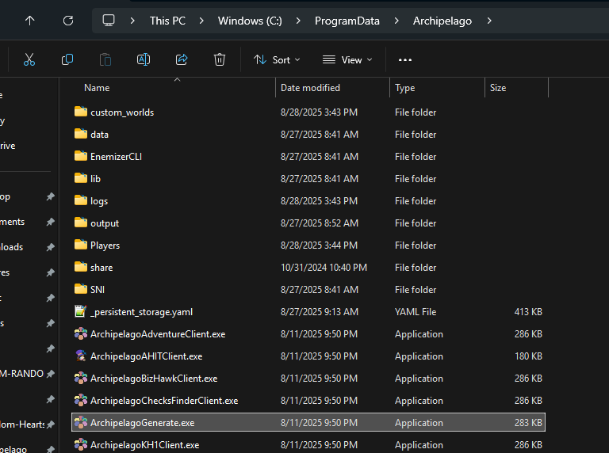
After a short wait, you should see a new file in your "output" folder
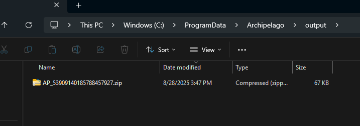
Navigate to https://archipelago.gg/uploads/ and upload the file in your output folder
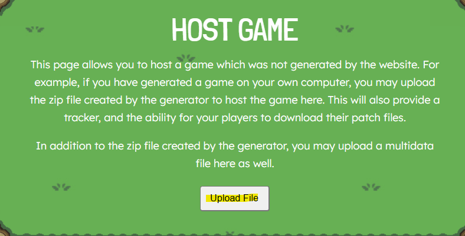
You should be redirected to Seed Info page. Click "Create New Room"
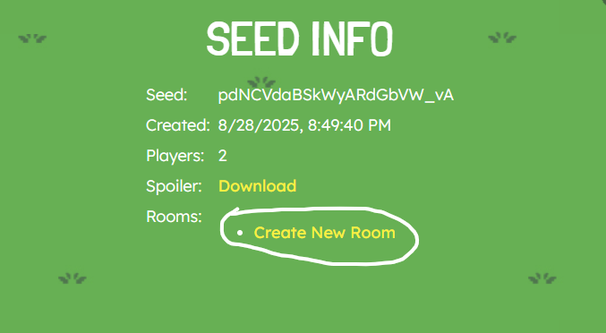
You should be redirected to a new room page. This will contain a link to download the patch file for the KH1 players, all the information they need to connect, and all the files/info for other players
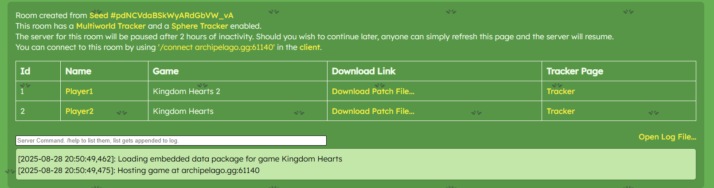
Installing your slot's mod
KH1 players should begin by downloading their patch file. This is either provided by their host, or they may click the "Download Patch File..." link associated with their slot in their game.
Using that downloaded patch file, generate your mod for OpenKH using the same instructions as the "Generating the mod" step in the Setup Guide
Connecting to the multiworld server (Option 1 File Client)
In OpenKH, ensure you have "gaithern/KH1-FILE-CLIENT" installed
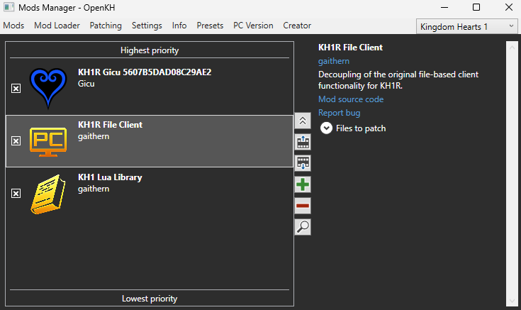
Open your Archipelago Launcher, which can be found in your start menu or by navigating back to your Archipelago installation folder
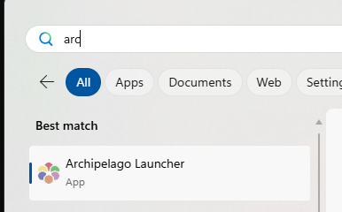
In your Archipelago Launcher, search KH1. Click "Open".
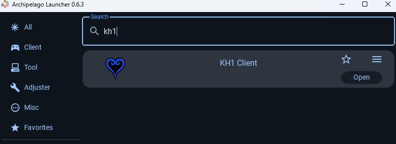
At the top of your client window, type in the server/port associated with your hosted game and click "Connect"
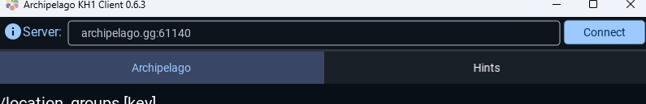
You'll be prompted to enter the slot name associated with your slot. In our example, its "Player2". Type this in the bottom and press enter.
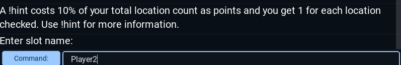
You should be greeted with the following messages. You should now be able to open your modded KH1 game via OpenKH and play!
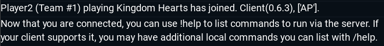
Connecting to the multiworld server (Option 2 DLL Client)
In OpenKH, ensure you have "gaithern/KH1-DLL-CLIENT" installed
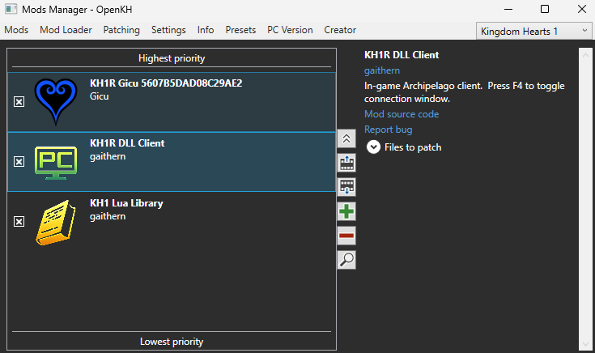
Once in game, press F4 to open the connection dialog window.
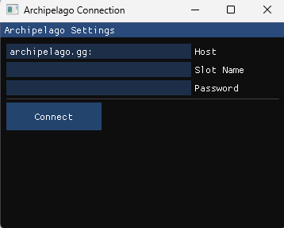
Type in the server/port associated with your hosted game and click "Connect"
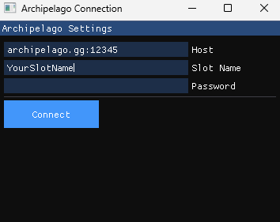
If connection was successful, you should see a confirmation message in game.
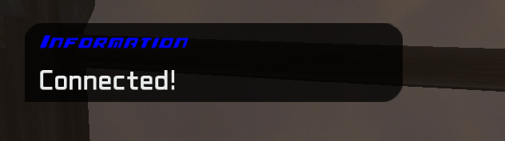
Having trouble getting set up? Feel free to join the KH1 AP Discord and reach out for help.